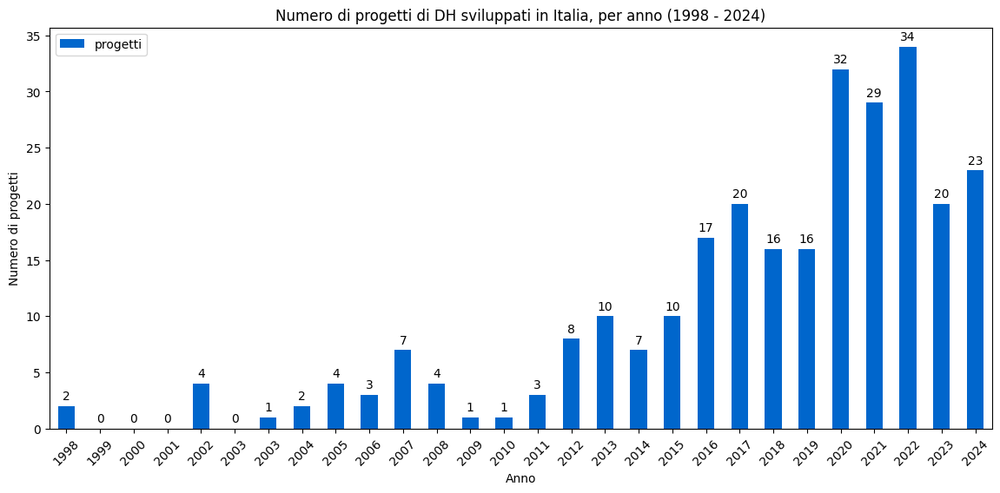
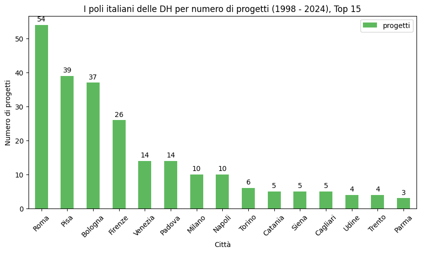
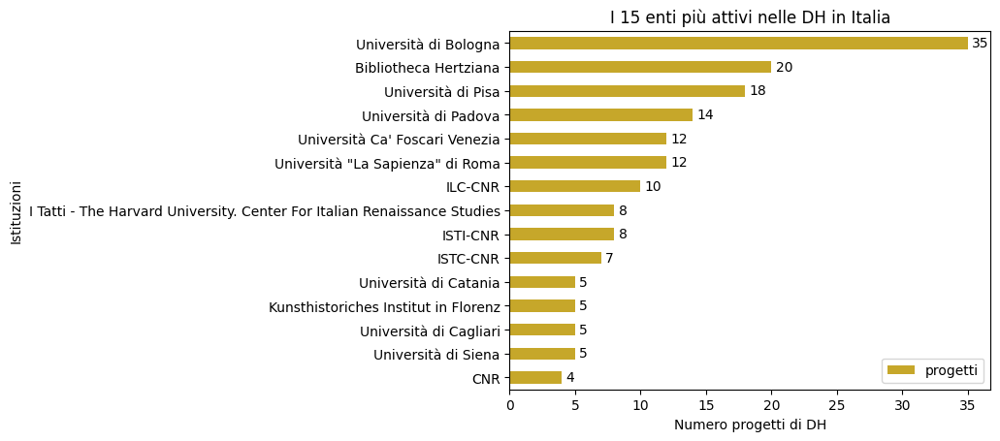
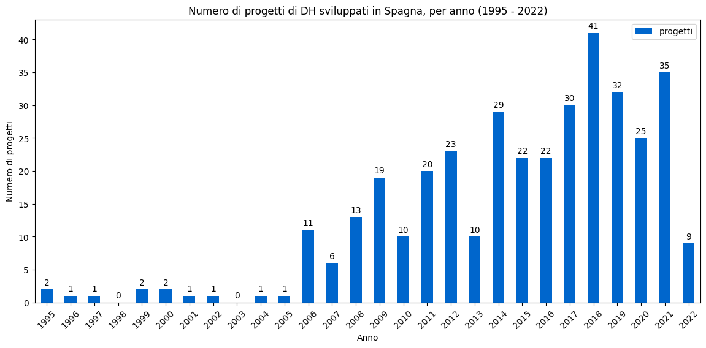
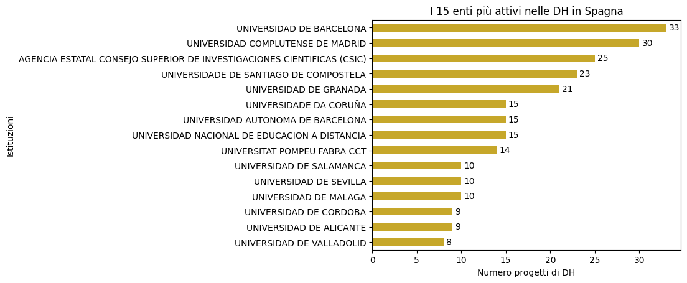
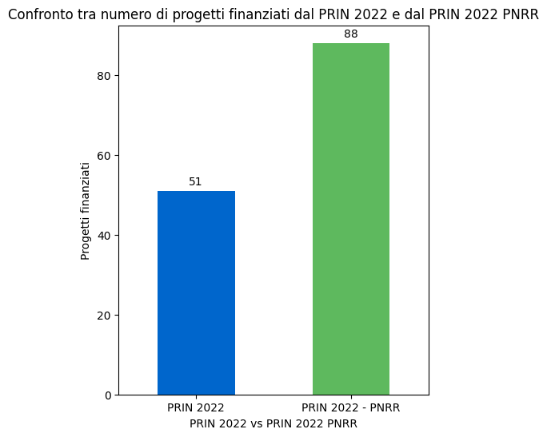
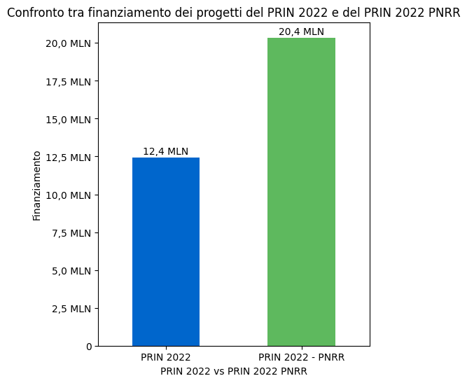

DHIS
DHIS Data Story
Data Story L'intervista
L'intervista Sui dati
Sui dati DH
DH About
AboutEsistono, all'intersezione tra informatica e discipline umanistiche, un campo di studi e un'area di ricerca che, nati tra 50 e 60 anni fa, oggi godono di una particolare attenzione, a causa, tra le altre cose, dello spopolare in ogni dove dei Large Language Model (Chat GPT, Gemini, Claude, e tutto il parentado): sono le Digital Humanities, o la nuova frontiera dell'umanesimo.
Ma qual è, davvero, lo stato di salute del settore in Italia?
E come se la cava il resto d'Europa?
Quali sono le prospettive della disciplina?
Come si gestisce un progetto di Digital Humanities
e quali sono i canali di finanziamento a cui esso può aspirare?
Ma «Dati, dati, dati! Non posso fare mattoni senza argilla»
diceva Sherlock Holmes,
e quindi era lì (nei dati!) che bisognava cercare le risposte a queste e ad altre domande.
E allora abbiamo cercato, trovato, costruito dati: e lì (nei dati!) c'erano alcune risposte.
1. Italia: l'asse temporale e la distribuzione spaziale
Lo studio Life and Death of DH Projects: A Preliminary Investigation of Their Lifecycles in Italy, del giugno 2025, ha tra i suoi risultati un dataset, Italian Digital Humanities Projects, costruito per essere un aggregatore, da numerose e svariate fonti, di progetti di DH sviluppati in Italia tra il 1995 e il 2024.
L'analisi temporale dei dati mostra una crescita lenta ma piuttosto costante del numero dei progetti pubblicati nel corso degli anni, con un picco tra 2020 e 2022 a cui con buona probabilità hanno contribuito anche le restrizioni dovute al covid.

Sicuramente non stupisce che Roma (sede di tre università, ministeri, centri di ricerca),
e Bologna (la cui università è fra le più grandi d'Italia) siano sul podio.
Potrebbe forse apparire più sorprendente la presenza di Pisa in seconda posizione, ma bisogna considerare che la città, nota per essere la
sede di una grande università e di due scuole universitarie superiori di eccellenza, ospita
anche le sedi principali dell'Istituto di Linguistica Computazionale (ILC) e
dell'Istituto di Scienza e Tecnologia dell'Informazione (ISTI), nonché di altri istituti del Consiglio Nazionale delle Ricerche (CNR),
i quali, difatti, si dimostrano piuttosto attivi in quanto a progetti sviluppati (rispettivamente 10 e 8).


1.1 La Spagna: un confronto europeo
Ma come se l'è cavata la Spagna, Paese paragonabile all'Italia per cultura, dimensioni e società, nello stesso arco di tempo? La risposta l'abbiamo ottenuta analizzando i dati contenuti nel dataset Mapping digital humanities projects in Spain, che raccoglie dati su 371 progetti di DH pubblicati in Spagna tra il 1995 e il 2022.
Dal punto di vista termporale emerge anche in questo caso un quadro di crescita lenta ma discontinua, che ha il suo picco nel 2018, quindi qualche anno prima rispetto all'Italia.

Dal punto di vista geografico si nota, invece, come siano le istituzioni delle città più grandi, Barcellona e Madrid a portare avanti il maggior numero di progetti.

Inoltre, uno studio del 2020 condotto su 368 progetti di DH in Spagna, inoltre, ha evidenziato alcuni punti interessanti:
-
Un interessante bilanciamento di genere tra chi si occupa di ricerca: 52,9% uomini e 47,1% donne. Questo rapporto è più equilibrato rispetto alla media della ricerca generale in Spagna (61,2% vs 38,8%) e alle sole discipline umanistiche tradizionali.
-
Per quanto riguarda le discipline, prevalgono i progetti di filologia (36%), seguiti da quelli di storia (16,5%) e di informatica (10,8%).
2. Finanziamenti: chi paga la ricerca? Il sistema dei PRIN
In Spagna, lo studio ha rilevato che il 72% dei finanziamenti proviene da fondi ministeriali, quindi pubblici, mentre solo il 10% dal settore privato. Ogni progetto riceve in media un finanziamento di 64.313 €, ma quello mediano ne riceve 42.350 €, e questo indica una certa disuguaglianza nella distribuzione delle risorse.
In Italia, il quadro dei finanziamenti è dominato dai bandi PRIN (Progetti di Rilevante Interesse Nazionale).
Abbiamo quindi raccolto e analizzato i dati dal sito del Ministero dell'Università per quanto riguarda i progetti finanziati con il PRIN 2022 e con il PRIN 2022 PNRR.
PRIN 2022
Secondo le nostre analisi il PRIN 2022 ha finanziato 51 progetti di Digital Humanities,
per un totale di poco meno di 12,5 milioni di euro, con ogni progetto che ha ricevuto
in media circa 243,5 mila euro e con una distribuzione delle risorse estremamente
equilibrata (mediana 246 mila euro).
PRIN 2022 PNRR
Secondo i dati ufficiali forniti dall'agenzia governativa Italia domani,
30 dei 194 miliardi di euro del PNRR sono destinati a istruzione e ricerca (quasi il 15,5%).
Di questi 30 miliardi, 808 milioni sono stati spesi, per esempio, in borse di studio per l'accesso all'università,
510 milioni per finanziare borse di dottorato supplementari, e, ancora, 1,8 miliardi di euro
per finanziare il bando PRIN 2022 PNRR.
In breve, quasi l'1% dell'intero PNRR è stato destinato al bando PRIN 2022 PNRR: 5.350 progetti finanziati,
nei più svariati ambiti di ricerca, con livelli e standard di sostenibilità ambientale dettati dalle direttive UE.
Ora: di questi, secondo le nostre analisi, 88 erano progetti di Digital Humanities: per un
investimento in questo ambito che si aggira sui 20 milioni di euro, con ogni progetto finanziato mediamente
per 230 mila euro, con una distribuzione delle risorse equilibratissima (mediana 230 mila euro).


2.1 Analisi di un progetto di DH: il caso MaximHum
Tra i progetti finanziati dal PRIN 2022 PNRR c'è il progetto MaximHum, un progetto in collaborazione tra Università di Pisa, Università di Chieti e Pescara e Università di Bologna.
Il progetto, sviluppato tra il 2023 e l'inizio del 2026, mirava alla costruzione di un archivio digitale di testi codificati digitalmente di Massimo il Greco, importante umanista bizantino attivo tra Quattrocento e Cinquecento tra la Moscovia e l'Italia.
La professoressa Francesca Romoli, docente di slavistica all'Università di Pisa e Principal Investigator del progetto, ci ha parlato dell'importanza della collaborazione tra professionalità diverse e complementari e del valore dell'investimento pubblico nella ricerca.
«
Il nostro progetto partiva da zero e senza la cornice del PRIN PNRR non sarebbe stato possibile,
anche per l’incrocio di competenze.
Il PRIN PNRR è stato importante in maniera particolare perché ha permesso e finanziato la costruzione di un
gruppo di ricerca ampio e interdisciplinare, composto anche di ricercatori a tempo pieno i quali, a differenza di
un docente strutturato con obblighi di didattica, possono contribuire con maggiore efficienza a progetti di ricerca così ambiziosi.
[...]
una volta che esiste un archivio digitale, si aprono orizzonti di ricerca prima impensabili,
anche per testi antichi con caratteristiche linguistiche complesse.
»
«
Non sono sicura di quanto un ente privato possa individuare tematiche settoriali in cui sviluppare i prodotti; in ogni caso
abbastanza spesso e soprattutto per le questioni informatiche circa le infrastrutture digitali, la collaborazione tra
pubblico e privato è già oggi importante.
Ciò che è sicuro è che operando nella ricerca pubblica nessuno ci dice cosa dobbiamo o non dobbiamo fare:
la ricerca pubblica ha la garanzia e privilegio di essere pubblica, e quindi libera.
»
(Leggi qui l'intervista integrale)
3. Conclusioni. Verso il futuro: sfide e prospettive delle DH
Le nostre analisi hanno evidenziato come il settore delle Digital Humanities sia in costante crescita: il fatto che PRIN 2022 e PRIN 2022 PNRR abbiano finanziato 139 progetti significa che tra 2025 e 2026 sono stati pubblicati o saranno a breve pubblicati 139 tra archivi digitali, edizioni elettroniche, digitalizzazioni di patrimonio letterario o culturale, studi o prodotti di linguistica computazionale; insomma: 139 nuovi esemplari di umanesimo che si affaccia nel futuro.
Però la sfida per gli anni a venire non sarà solo tecnologica, ma anche politica ed economica: come incentivare il finanziamento, la diffusione e la fruizione di nuovi progetti di Digital Humanities? Un maggiore coinvolgimento del settore privato è possibile? La mancanza dei fondi PNRR si farà sentire?
Noi un po' di mattoni li abbiamo messi, ma adesso tocca a te: se questa storia ti è piaciuta, condividila o inviaci un commento alle mail che trovi in fondo alla pagina!